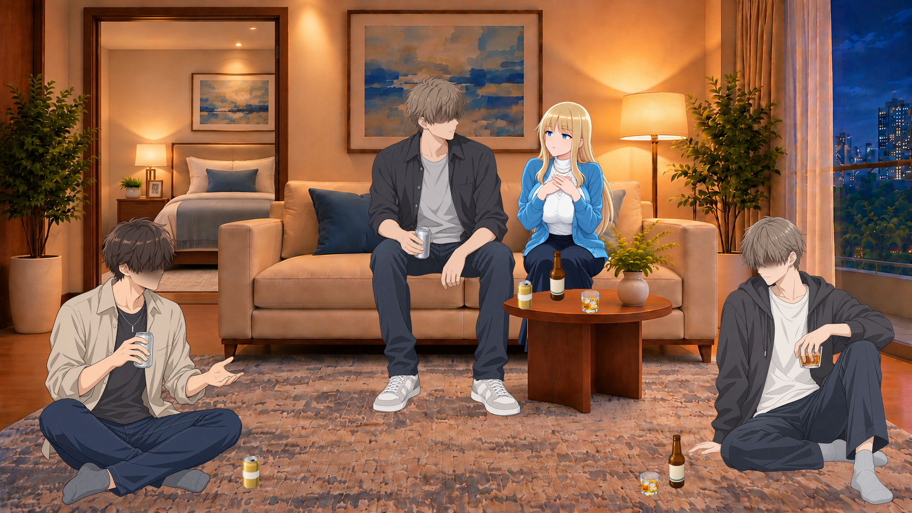
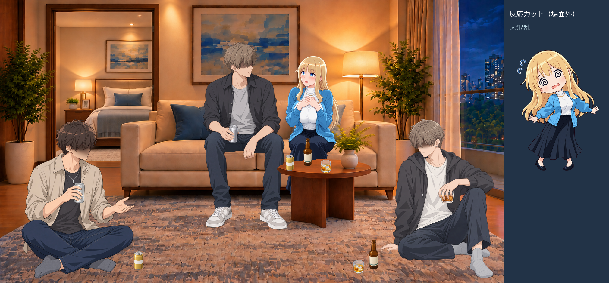
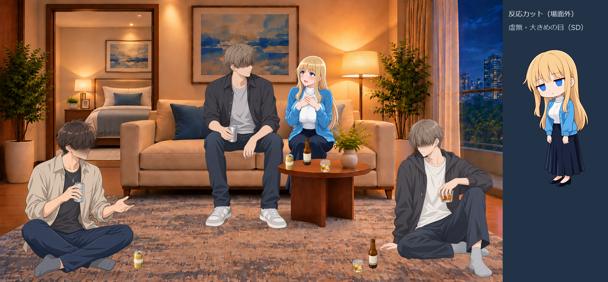
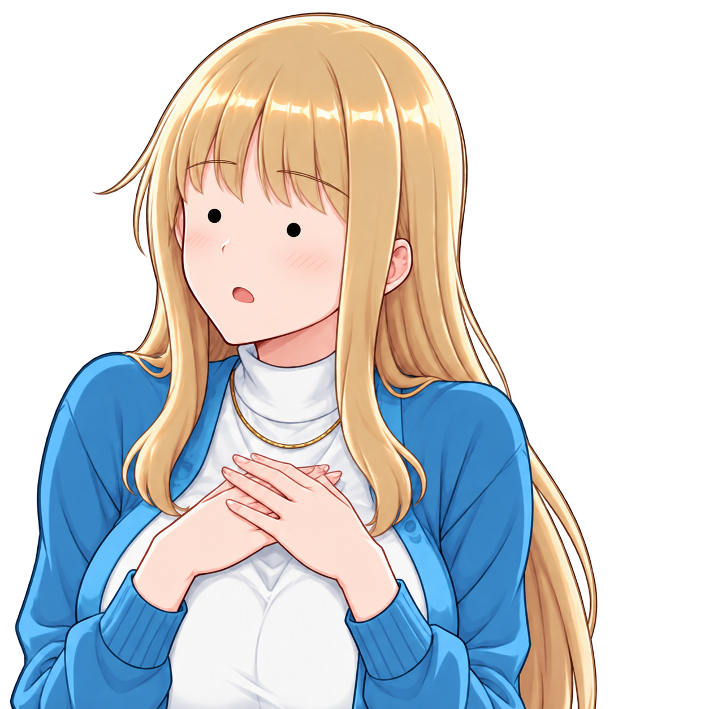

通常21種＋デフォルメ5種の表情ライブラリ
目・眉・口・顔色の組み合わせを変えた差分。気に入っていただいた通常頭身の「＞＜目」は残し、点目・白目・ぐるぐる目・赤面点目と、追加依頼の虚無を全身デフォルメで用意しました。
全26種類は制作候補です。ユーザーが良いと評価した通常「＞＜目」と、それ以外の作業側候補を区別しています。恋の予感と妄想は差が小さめ、頬ぷくは輪郭固定により弱め。すべて品質合格・採用済みという意味ではありません。
追加依頼：虚無のデフォルメ版、目は少し大きめ
通常頭身：21種
胸元に手を重ねた同じ立ち絵へ、顔の局所差分を合成しました。ポーズ・衣装は共通です。顔差分レイヤーは元の全身素材に原寸・同じ原点で重ねる専用素材で、別の角度の顔にはそのまま合いません。
全身デフォルメ：5種
頭・髪・胴・手足まで簡略化した独立PNG。厳密な3頭身や完全なフラット塗りへの統一は未達ですが、通常の体へ記号顔だけを載せた初期案とは分けて使えます。
通常表情を宅飲みに配置：8種
男性3人を残し、ヒロインの座位と大きさは共通。人物・家具・お酒・接地影は別レイヤーです。下のPNGは確認しやすい合成出力で、一枚絵だけを納品する方式ではありません。
皆に褒められて、照れながら抗議
8種の全景をすべて表示
皆に褒められて、照れながら抗議
男子3人同席／ヒロインは右側。引き戸：開 ／ 閉
長い話を聞いて、無言の虚無

男子3人同席／ヒロインは右側。引き戸：開 ／ 閉
男子の冗談にジト目
男子3人同席／ヒロインは右側。引き戸：開 ／ 閉
イベント景品を見て目を輝かせる
男子3人同席／ヒロインは右側。引き戸：開 ／ 閉
恋の話でからかわれて真っ赤
男子3人同席／ヒロインは右側。引き戸：開 ／ 閉
さりげない気遣いに感動
男子3人同席／ヒロインは右側。引き戸：開 ／ 閉
相手をからかい返す
男子3人同席／ヒロインは右側。引き戸：開 ／ 閉
ボードゲームの番を待ちきれない
男子3人同席／ヒロインは右側。引き戸：開 ／ 閉
デフォルメは会話の反応カットにも
室内の人物を隠さず、場面外の枠で反応を見せる例です。元の背景画像に枠は追加していません。
5種の表示例
思考停止：反応カットの使い方
右の独立した枠が会話用カット。室内に同じ人物をもう一人置いた配置ではありません。
呆然：反応カットの使い方
右の独立した枠が会話用カット。室内に同じ人物をもう一人置いた配置ではありません。
大混乱：反応カットの使い方

右の独立した枠が会話用カット。室内に同じ人物をもう一人置いた配置ではありません。
恥ずかしさの限界：反応カットの使い方
右の独立した枠が会話用カット。室内に同じ人物をもう一人置いた配置ではありません。
虚無・大きめの目（SD）：反応カットの使い方

右の独立した枠が会話用カット。室内に同じ人物をもう一人置いた配置ではありません。
比較・失敗・未達
最初の通常頭身の点目（今回の通常候補から除外）

ユーザーから不自然で使いどころが難しいという指摘。SD01へ展開しました。一方、通常02の＞＜目は良いと評価されたため残しています。記号顔を一律にSD専用とする結論にはしていません。
- 表情工程：内蔵生成27出力。26種の候補と、通常の点目の比較試作1。安全拒否・通信エラー0。
- 別工程の仕草制作には、床座りで他の二人を見てドキドキする姿勢1件が出力安全判定で拒否されました。新版03のE5は、生成できた胸元の仕草を使う代替。拒否された姿そのものは未制作です。
- 通常21種のマスク外RGBA変更0、元アルファ変更0を静的検査。これは局所合成の結果であり、生成モデル単独の完全固定能力ではありません。
- 恋の妄想は普通の微笑みに寄り、頬ぷくの外形変化は部分合成では不足。感情をさらに強くする改善余地があります。
- 複雑な接触・指先・腕の回り込み・脚の絡みは、別途仕上げが必要。ゲーム内・VM内・ブラウザー操作テストは未実施。
全指示・参照・生成結果 ／ 候補ごとの採否メモ ／ 人物別の配置 ／ 静的検査